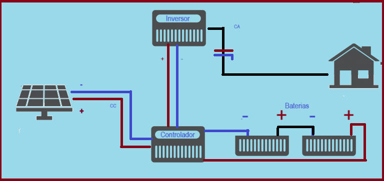

Os sistemas fotovoltaicos off-grid funcionam de forma isolada, ou seja, não estão conectados à rede elétrica da concessionária. Esse tipo de sistema pode ser dividido em três categorias:
A grande diferença do sistema off-grid são as baterias, que permitem alimentar uma residência sem depender da rede elétrica da concessionária. No entanto, essas baterias representam um custo adicional considerável ao sistema, o que pode inviabilizar financeiramente alguns projetos.
Os sistemas off-grid são frequentemente utilizados em áreas remotas, onde não há acesso à rede elétrica da concessionária. Além disso, eles são ideais para sistemas de bombeamento solar, que permitem levar água para locais inacessíveis, transformando vidas.
